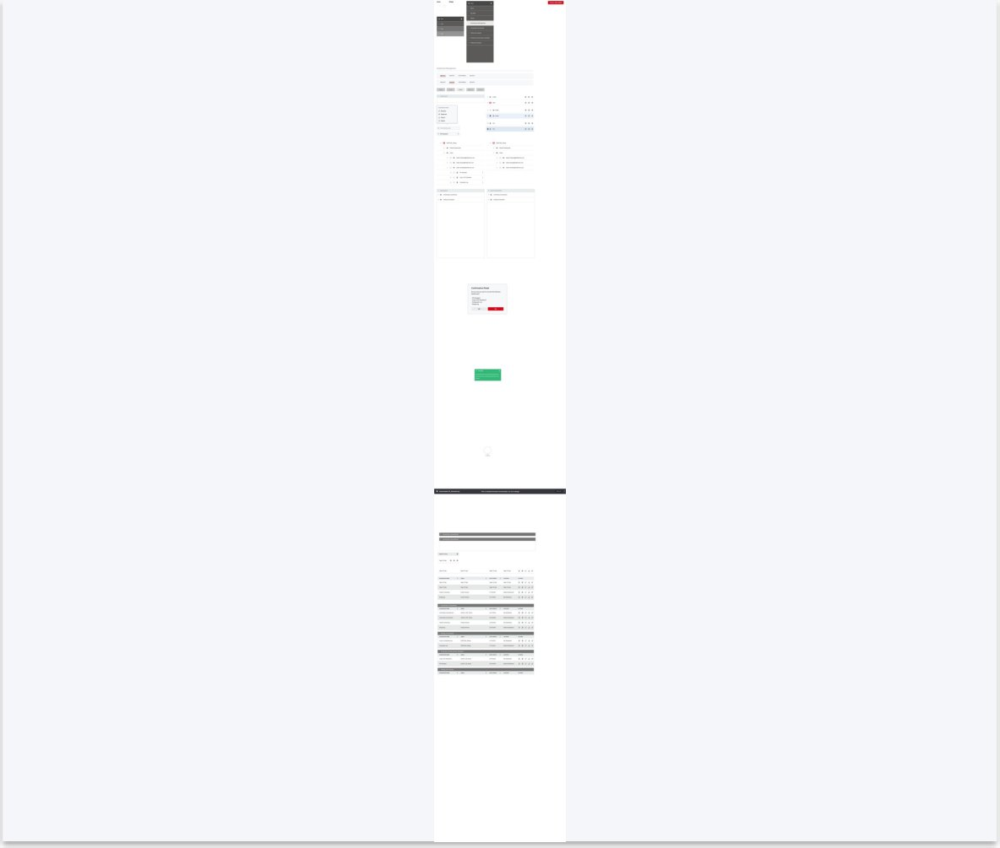
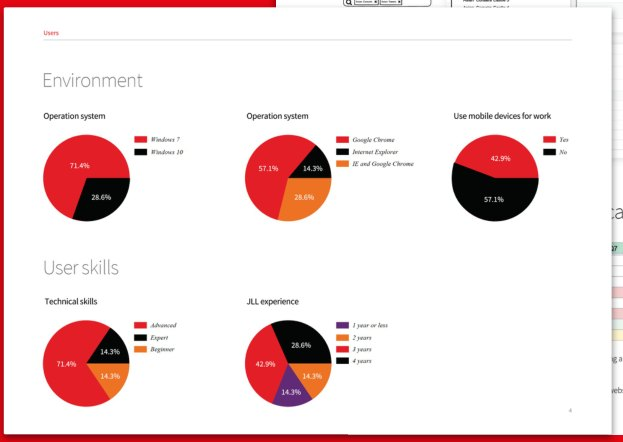

A global real-estate services company shipped an MVP of a property portal, and management who used the old system said it was not working, without saying what was wrong. I ran remote usability testing with end users and turned the complaint into a fix engineers shipped in one day.

Remote usability sessions with end users produced two findings. First, users completed four of five tasks largely because of large screens, while management worked from small laptops. Second, users searched for clients in the property list and for properties in the client list.
I proposed one unified list with a single search and filter, removing clients and properties as separate pages. The development team implemented the change in one day.

Client names, process artifacts and outcomes stay within NDA. Ask, and I will walk you through the full case.
Get in touchRequest the case